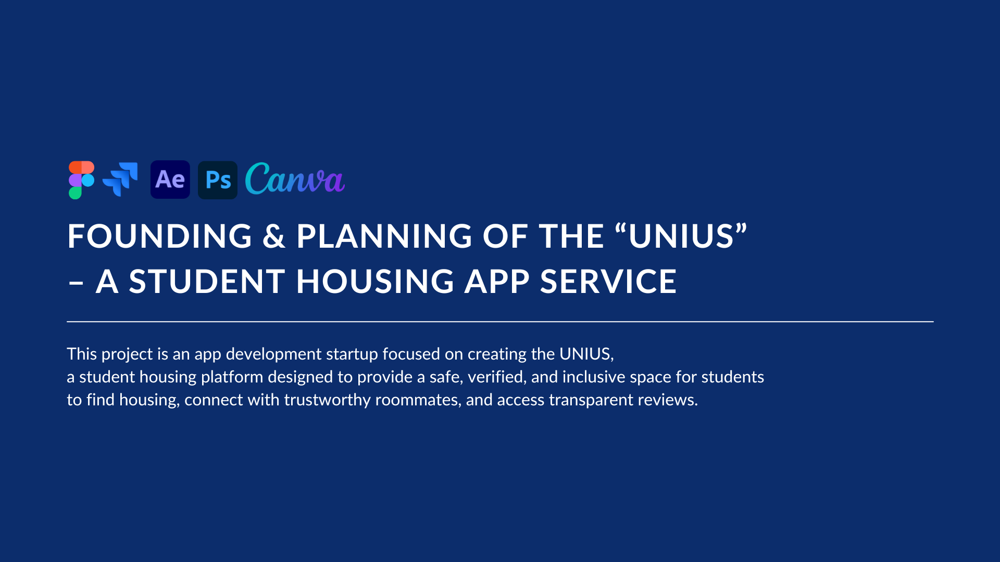
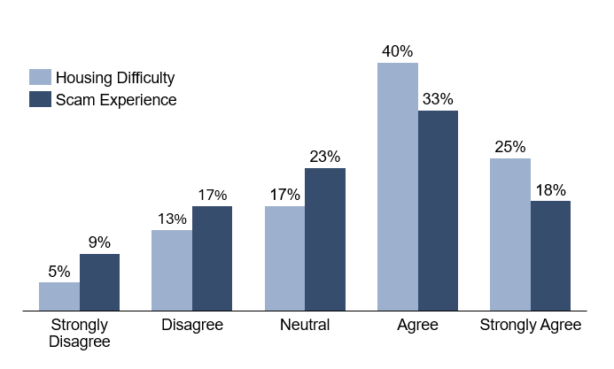
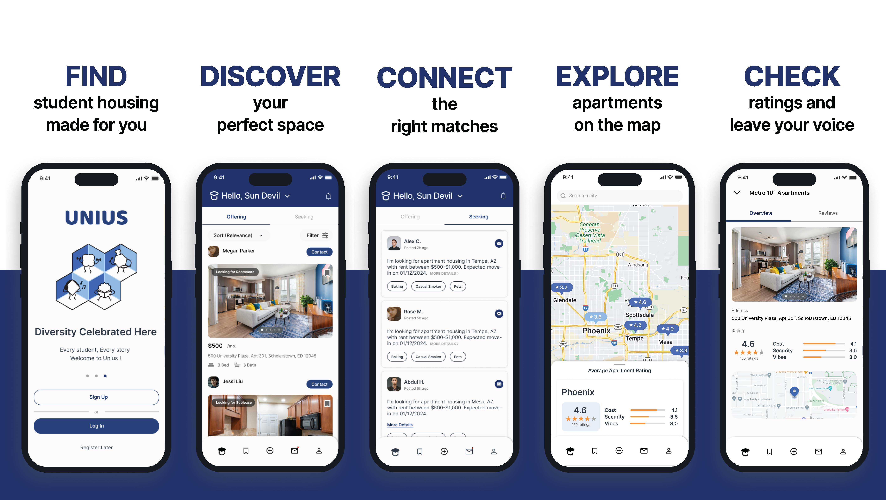

Founding & Planning of the “UNIUS” – A Student Housing App Service



Title
Founding & Planning of the “UNIUS” – A Student Housing App Service
Description
- Project Duration: 05/2023 – 03/2025
- Project Type: App Development Startup Venture
- Team: YN (Ryan) Kim (CEO), Minsung Kim (COO), Woojeh Chung (CTO), Jungwoon Choi (Tech Advisor), Sukruth Vinay Rao (Business Developer), Zahera Suhartono (UI/UX Designer), Fawwaz Firdaus (Lead App Developer), Abhinav Koyyalamudi (App Developer), Pratham Hegde (App Developer)
- My Role: Planning, Project Management, Product Management
- Contribution: 100%
💡 WHY WE STARTED
Tackling the Student Housing Challenge with a Smarter, Safer, and More Inclusive Solution.
As an international student, I faced the overwhelming challenge of finding the right housing and trustworthy roommates. Without a reliable and inclusive platform, many students — especially those new to the country — are left vulnerable to scams, misinformation, or simply not knowing where to start.
That personal struggle inspired us to take action.
We came together as a team of students who understood the problem firsthand — and decided to build a solution by students, for students.
A space where anyone can confidently search for housing, connect with real people, and feel supported through one of the most stressful parts of student life.
That’s how the UNIUS was born.
🛠️ HOW WE STARTED
We didn’t just build an app — we started with research, real stories, and insights directly from students to ensure that the solution truly met their needs.
1. Market Research
Through thorough research and data analysis, we discovered significant gaps in the current student housing experience:
- No Centralized Platform: Existing housing platforms were unreliable, insecure, and challenging to navigate. This was especially problematic for students seeking to manage subleases or find compatible roommates.
- Complex Lease & Roommate Management: Students were struggling to handle subleases and often lacked tools for finding the right roommate match.
- Lack of a Trustworthy Rating System: There was no organized platform to share honest reviews on housing, landlords, or roommates. This led to confusion and uncertainty for students searching for their next living situation.
2. Understanding Our Audience
To validate our assumptions, we conducted a user survey with 129 ASU student responses.

Difficulty in Finding Suitable Housing:
- 65.12% of respondents agreed or strongly agreed that they struggled to find suitable housing during university.
- Only 17.83% disagreed, while 17.05% remained neutral.
- This indicates that 2 out of 3 students experienced challenges in securing appropriate accommodation, highlighting a significant gap in accessible, trustworthy housing solutions.
Exposure to Scams or Unverified Listings
- 50.39% of respondents agreed or strongly agreed that they encountered scams or unverified listings while using platforms like Facebook groups.
- 26.35% disagreed, and 23.26% stayed neutral.
- This suggests that over half of students face potential risks and unreliability when searching for housing online.
These insights confirmed what we had experienced ourselves — students need a smarter, safer, and more supportive solution.
3. Creating the Solution: the UNIUS
From those insights, we set out to create a platform that directly addresses these pain points:
- Centralized Housing Platform: We developed a one-stop marketplace for verified student housing, subleases, and takeovers, making the process of finding housing easier and more reliable.
- Safe & Verified System: Our school ID verification ensures a secure, scam-free environment where students can trust the listings and people they interact with.
- Organized Rating System: We implemented a transparent review system for housing, landlords, and roommates, built on real student experiences, allowing others to make informed decisions based on trusted feedback.
🌟 WHAT WE CREATED
We teamed up with talented developers and designers to build an iOS app that meets the unique needs of students searching for housing and roommates.

- FIND student housing made for you.
A free, college-exclusive platform — inclusive to all students.
- DISCOVER your perfect space.
Personalized listings that fit your budget, lifestyle, and location.
- CONNECT with the right roommates.
Match with real students through smart, interest-based matching.
- EXPLORE apartments on the map.
Browse nearby listings with real-time location and availability.
- CHECK ratings and contribute your voice.
Read trusted reviews and write your own to help fellow students.
🚀 WHAT WE ACHIEVED
After numerous meetings and working sessions, we successfully launched the app on the iOS App Store and saw our vision come to life with a fully functional app. Also, we presented our idea and pitch deck to a panel of experts and potential investors, taking our concept to a whole new level!
1. App Store Launch
Launched THE UNIUS on the iOS App Store on January 22, 2024. Since the launch, we have achieved about 400 downloads and are experiencing growth as more students discover and trust our platform.
2. ASU Venture Devils Demo Day
Crafted the company’s branding and pitch deck, which were pivotal in gaining attention and attracting investment. We proudly placed in the Top 25 at the prestigious Fall 2023 ASU Venture Devils Demo Day, securing $1,000 in funding to accelerate both app development and marketing initiatives.
📚 WHAT I LEARNED
Though we ultimately decided not to continue with the startup, this journey provided invaluable lessons in entrepreneurship, product management, and project management. The experiences, both the successes and setbacks, allowed me to grow in ways I couldn’t have imagined.
1. Resilience in the Face of Uncertainty
Starting a business involves a lot of unpredictability. This project taught me the importance of staying resilient even when things don’t go as planned. Whether it was shifts in the team, marketing challenges, or the evolving product scope, I learned that flexibility and a positive mindset are essential for navigating the rough patches that come with building something from scratch.
2. Agile Product Development
The project helped me embrace agile principles, where flexibility and continuous improvement are essential. By breaking the work into manageable sprints and delivering incremental updates, we were able to continuously refine the product based on feedback. I learned how important it is to have short development cycles that allow room for rapid iteration and quick responses to user feedback.
3. Clear Communication & Documentation
One of the most crucial project management lessons was the importance of clear, transparent communication. Ensuring that everyone understood their roles, deadlines, and the overall project goals helped keep the team focused and on track. I also learned how valuable documentation is for tracking progress, maintaining consistency, and onboarding new team members effectively.